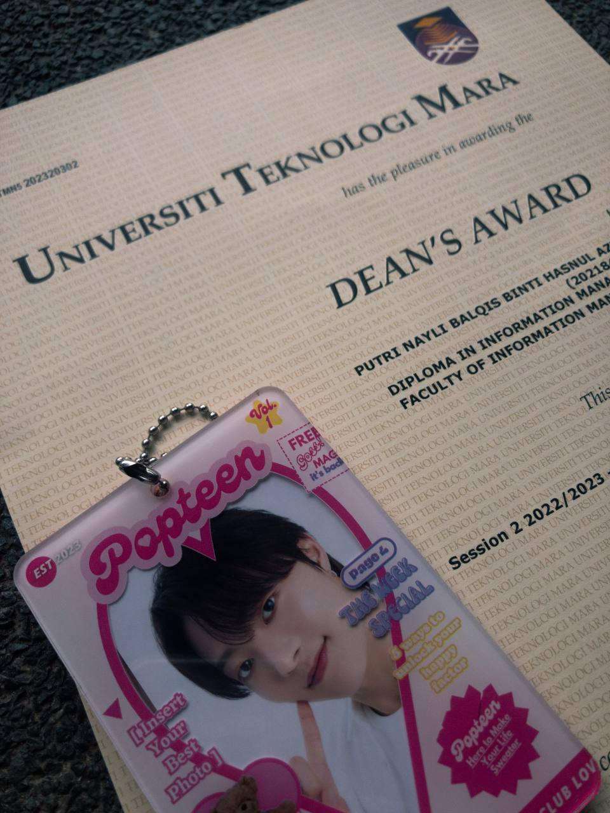

<html>
    <head>
        <title>My Edu</title>
    </head>

    <body bgcolor="#FFC084"></body>
 
   
    <font face="Courier New"></font>
    <font color="#A63838">
        <h1 align="center">꒷꒦📒｡ﾟ✏️˚⋆˙┈✍꒦꒷ My Educational Journey ꒷꒦📒｡ﾟ✏️˚⋆˙┈✍꒦꒷
        <hr size="3" color="#FFC084" width="100%">

        <link rel="stylesheet" href="css/style.css"
            <body>
                <ul>
                    <li><a href="index.html">Home</a></i>
                    <li><a href="biodata.html">Biodata</a></li>
                    <li><a href="education.html">Education</a></li>
                    <li><a href="experience.html">Experience</a></li>
                    <li><a href="interest.html">Interest</a></li>
                    <li><a href="gallery.html">Gallery</a></li>
                <ul>
                </body>
                </html>
                

                <hr size="3" color="#FFC084" width="100%">  

                <div>
                    <audio controls>
                        <source src="audios/firework teamies.m4a" type="audio/ogg">
                        <source src="audios/firework teamies.m4a" type="audio/mpeg">
                    </audio>
                </div>
                
                <bgsound src="audios/firework teamies.m4a">
                   
                <!--Inserting images-->
                <div align="center">
                

                <p>
                <div align="center">
                </p> <h1><font color="#D36769"size="4" face="Times New Roman" >
                    <b>My Educational Journey: A Chronicle of Growth and Achievement.</b>

                    </p> <h1><font color="#D79B9C"size="4" face="Courier New" > <b>Early Years (2007-2015):</b>
                    <div align="center">

                    </p> <h1><font color="#A57071"size="3" face="sans serif" >
                    From 2007 to 2015, I navigated through the foundational years of my education at <u>SJKC Naam Kheung</u>. These years laid the groundwork for my academic skills and social interactions. The diverse learning environment of a Chinese primary school provided me with a solid foundation in language and mathematics. The multicultural setting enhanced my adaptability and cultural awareness.

                    <div align="center">
                    </p> <h1><font color="#D32750"size="4" face="Courier New" ><b>Secondary Education (2016-2018):</b>

                    <div align="center">
                    </p> <h1><font color="#E55879"size="3" face="sans serif" >
                    The journey took a new turn as I entered the halls of <u>SMK Seri Permaisuri</u> from 2016 to 2018. Here, I not only delved into a more advanced academic curriculum but also discovered my passion for leadership and service. Earning the role of vice president in my class and being appointed as a prefect allowed me to exercise my leadership skills.
                    My commitment to academic excellence shone through as I consistently ranked among the top three students in both class and school. Beyond academics, my foray into extracurricular activities manifested in a remarkable third place in a cooking competition, showcasing my diverse talents.
                    <div align="center">

                    </p> <h1><font color="#C73E4A"size="4" face="Courier New" ><b>Service and Leadership (2019-2021):</b>

                    <div align="center">
                    </p> <h1><font color="#E42939"size="3" face="sans serif" >
                    The subsequent chapter unfolded at <u>SMK Lembah Subang</u> from 2019 to 2021. Armed with the experience gained in my earlier years, I continued to excel academically, maintaining a position in the top echelons of my class. However, it was my involvement in community service that added depth to my educational narrative.
                    In collaboration with the foundation <u>"Yayasan Amal Asas" </u>.I played a pivotal role in organizing a successful charity event within a housing community. This experience not only demonstrated my organizational prowess but also underscored my commitment to giving back to society. The SULAM project held in SEMESRA was another significant endeavor, contributing to the betterment of the community.

                    <div align="center">
                    </p> <h1><font color="#F1617A"size="4" face="Courier New" ><b>Higher Education and Professional Experience (2021-2024):</b>

                    <div align="center">
                    </p> <h1><font color="#AE1A34"size="3" face="sans serif" >
                    My educational journey reaches its current phase as I find myself enrolled in <u>UiTM Rembau, Negeri Sembilan</u>, pursuing a Diploma in Information Management/Information Science. This transition signifies a leap into higher education, where I am equipped with the knowledge and skills necessary for the dynamic field of information management.
                    During this period, I have embraced the challenges and responsibilities of academic life, taking on the role of a dedicated student. Simultaneously, I have ventured into the professional realm, working as an assistant customer service representative in NU Sentral Parkson. Here, I have honed my interpersonal and communication skills & delivering impactful presentations.
                </html>